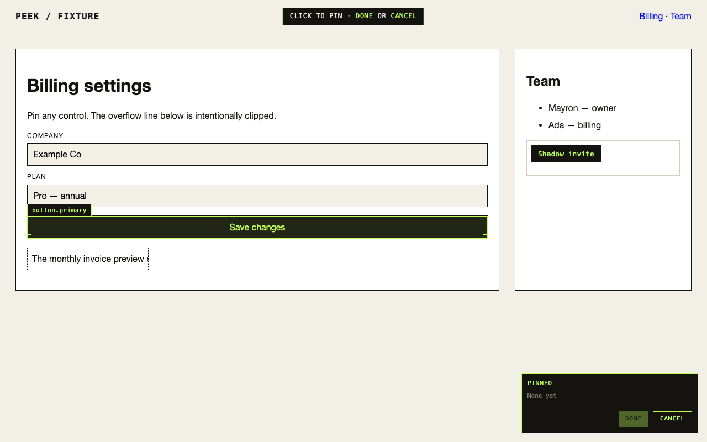
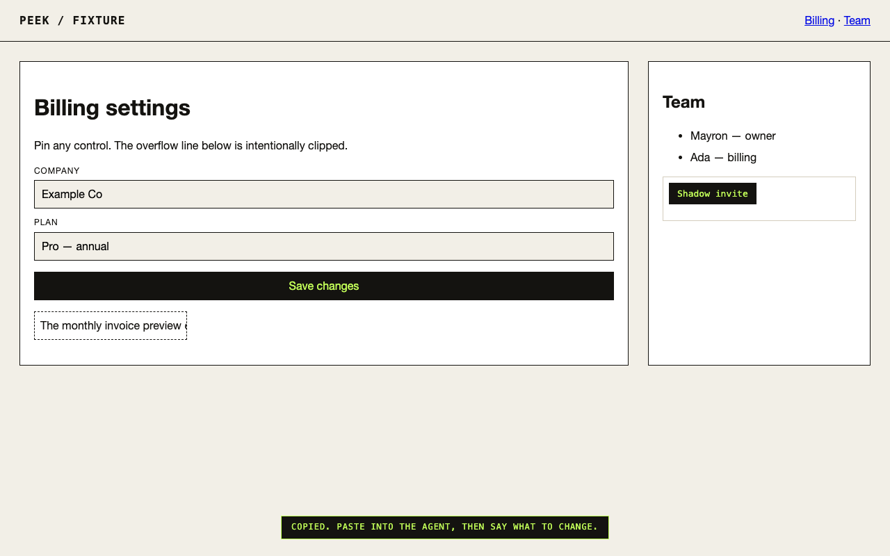

STEP 01
Arm the picker
Click the Peek icon or press Alt+Shift+P. A crosshair layer covers the page and a tray docks in the corner.
Click an element in your real browser. Your coding agent gets the unique selector, the element HTML, its computed styles, and a cropped screenshot. Not a whole-page screenshot. Not a description. The node.
curl -fsSL https://raw.githubusercontent.com/iammayron/peek/main/install.sh | sh
macOS and Linux · installs the CLI, the MCP server, and the agent skill · source on GitHub
Click the Peek icon or press Alt+Shift+P. A crosshair layer covers the page and a tray docks in the corner.
Click one element or several. Each becomes a pill in the tray, captured with its own cropped screenshot. Shadow DOM included.
Done copies a prompt to your clipboard. Paste it into the agent and say what to change — it reads the pins straight from disk.
peek wait blocks in the terminal, you pick two elements in the browser, and the pinned element comes back out on the left — selector, XPath, markup — ready to paste into the agent.
button.primary.
# Pinned element - URL: http://127.0.0.1:8899/testdata/pages/fixture.html - Title: Peek fixture - Selector (data-testid): [data-testid="save-billing"] - XPath: //*[@id="billing"]//form[1]/button[1] - Tag: button - Role: button — Save changes - Screenshot: ~/.peek/latest.png ```html <button class="primary" type="submit" data-testid="save-billing">Save changes</button> ```
selectorShortest selector that resolves to exactly this node, with the strategy that produced itxpathAbsolute path, for when the selector is fragileouterHTMLThe element markup, truncated for long treesstylesComputed styles as the browser actually resolved themrectBox, viewport size, and device pixel ratioroleAccessible role and name, as assistive tech would read itscreenshotPNG cropped to the element with padding, not the full pageinShadowFlagged when the node lives inside a shadow rootRead it with the MCP tool, the agent skill, or peek latest --md.
One command installs the CLI, registers an MCP server, and drops a skill into every agent it finds on your machine. Say “look at this” and the agent knows where to look.
| Command | Does |
|---|---|
| peek install | Native host, daemon, MCP, skills |
| peek doctor | Is the daemon, host, and last pin healthy |
| peek latest --md | Print the current pin as markdown |
| peek wait | Arm the overlay and block until the next click |
| peek mcp | stdio MCP server |
The extension talks to a helper on 127.0.0.1. There is no server, no account, and no sign-in.
Pins are written to ~/.peek with mode 0600. Delete the directory and they are gone.
Nothing is measured, phoned home, or bundled. The daemon only answers the extension you installed.
curl -fsSL https://raw.githubusercontent.com/iammayron/peek/main/install.sh | sh
Then load the unpacked extension from the path peek install prints. The Chrome Web Store listing is in review.